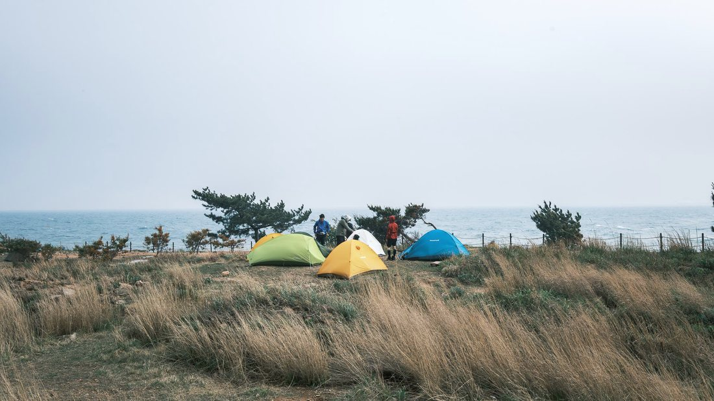
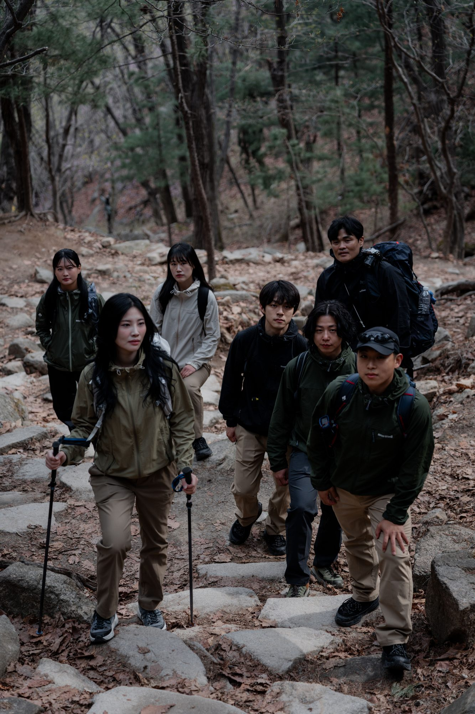
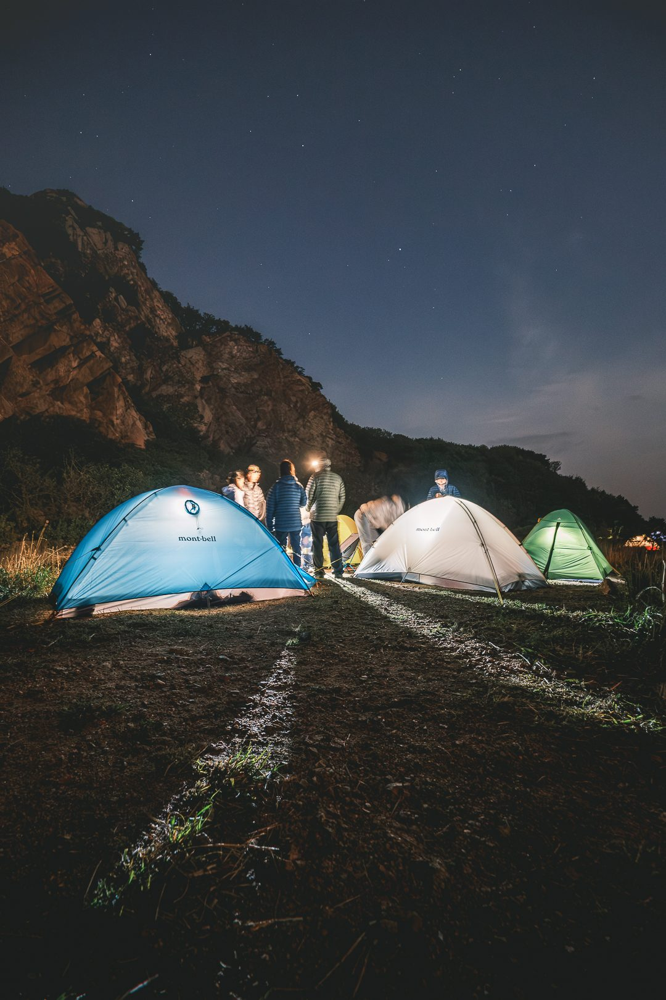
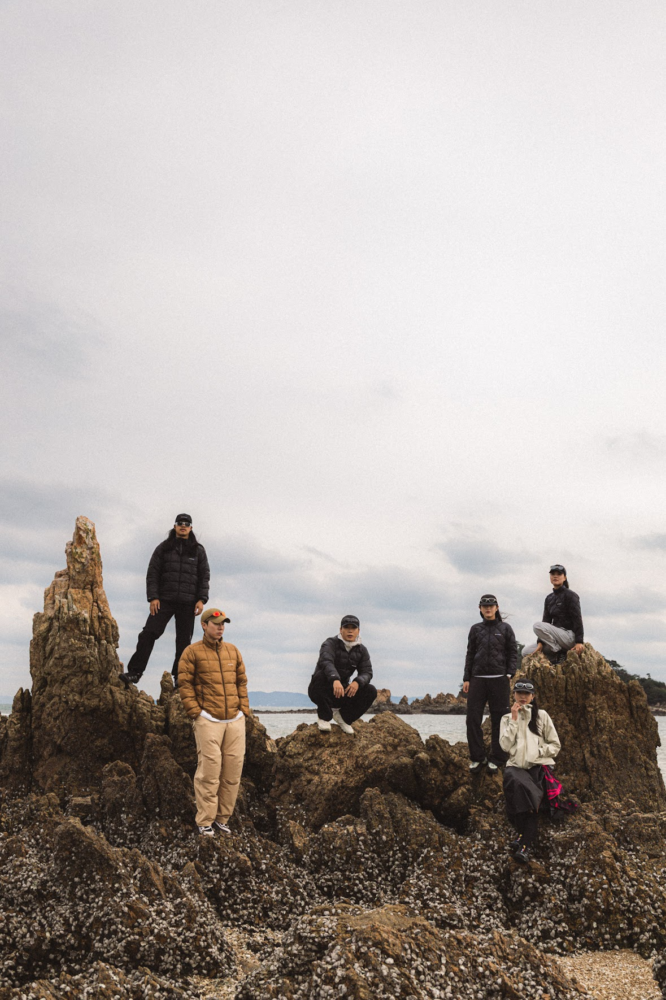
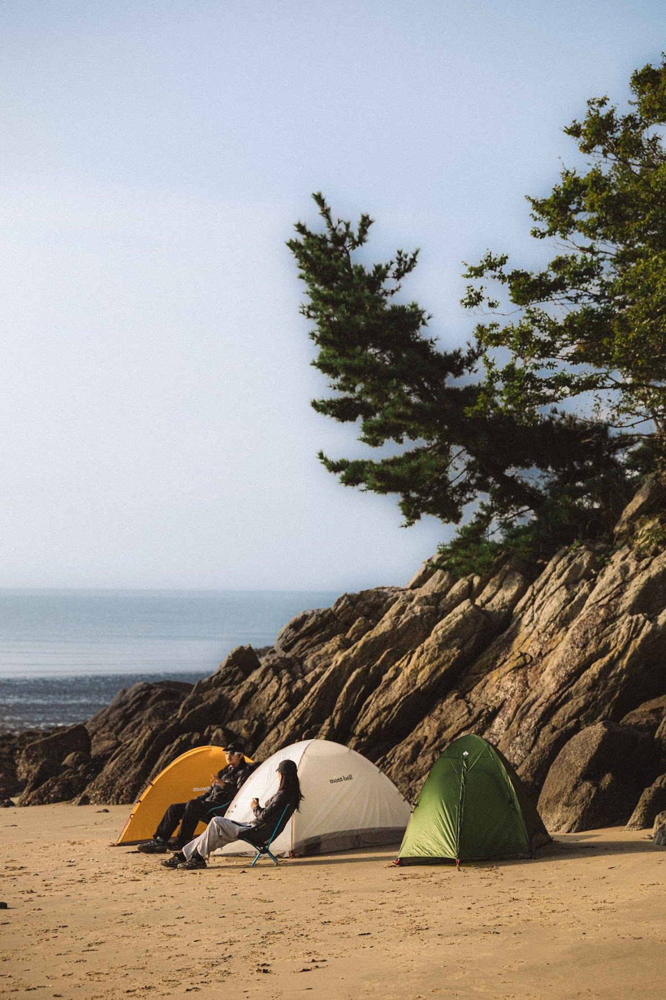

// 개요
몽벨 본연의 아웃도어 이미지를 다시 세우고, 브랜드 팬의 자발적 참여를 UGC 콘텐츠 생산으로 전환하는 인플루언서 크루를 기획·운영했습니다. 단순 '체험단'이 아닌 '크루' 구조로 만들어 선발 과정에 경쟁 요소를 넣어 자발적 참여를 유도했고, 1박 2일 백패킹으로 타 아웃도어 브랜드와 차별화했습니다. 현장에서 앰배서더가 브랜드 애착을 느끼도록 환대에 신경 썼고, 프로젝트 이후에도 긍정적 관계를 이어가고 있습니다.
목표 & 핵심 지표
사업 목표
프로젝트 이익 확보 및 차기 수주(리텐션)
마케팅 목표
클라이언트가 만족하는 콘텐츠 비주얼 퀄리티 확보, 팬의 자발적 참여를 UGC로 전환
핵심 지표크루 지원 경쟁률 70:1 · UGC 30+건 · 클라이언트 만족도 4.7점
// 실행
수행 업무
- 인플루언서 크루 1·2기 총 6회차 세션 운영·촬영 기획 (신청 800+, 평균 경쟁률 70:1, 클라이언트 만족도 4.7)
- 모집 공고 기획 → 크루 선발 기준 수립 → 세션 운영 → 결과 콘텐츠 가이드까지 E2E 직접 운영
- 몽벨 나인원 한남 팝업 바이럴 콘텐츠 — 인플루언서 섭외, OOH용 영상 편집, 리캡 사진·영상 촬영 기획 (500+ 공유)
- 호카·버킷스토어·르무통 등 회사 에셋 활용 마케팅 대행 기획·운영
협업 방식
- 클라이언트몽벨과 캠페인 방향·산출물 합의
- 촬영팀촬영 감독·사진 작가와 비주얼 컨셉 및 촬영 디렉션 협의
- 디자인디자이너와 모집·홍보물 제작
- 팀원세션 운영·현장 진행 분담
담당 범위크루 구조 설계·세션 기획·선발 기준 수립·현장 운영 총괄기여도 80%
// 성과
70:1
지원 경쟁률
30+
UGC 콘텐츠 생산
+35%
인게이지먼트 증가
800+
누적 신청자
// 회고
1기는 아웃도어 선호도와 진정성을 중심으로 크루를 선발했습니다. 참여 태도는 좋았지만 결과물의 비주얼 완성도가 기대에 못 미쳤고, 콘텐츠 자산으로서 활용도가 떨어졌습니다. 2기에서는 진정성을 유지하되 비주얼 요소를 선발 기준에 추가해, 콘텐츠 퀄리티를 끌어올렸습니다.
// 결과물
사진






영상